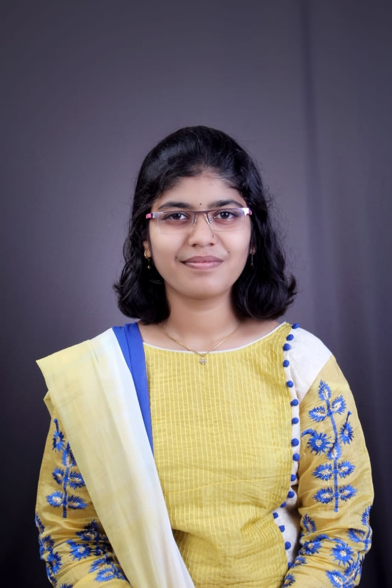

SHRUTI KIRAN PATIL
Student

Click here to see my HTML projets
Click here to contact me
Profile
Aspiring software developer looking forward to learning more things!
Enthusiastic about technology and want to further develop my skills.
Intending to build a good network by connecting with like-minded people.
Education
2021-present Islampur, India Computer Science and Engineering
Rajarambapu Institute of Technology
CGPA 8.36 (current)
2021 Islampur, India 11th-12th
Dyandeep Junior College
HSC 97.50%
2019 Islampur, India High School
Kamalabai Ramname Kanya Vidyalaya
SSC 96.60%
Programming Languages
C C++ DSA SQL Java
Languages
English Marathi Hindi German (Goethe A1 exam 96%)
Soft Skills
Team work Problem Solving Fast Learner